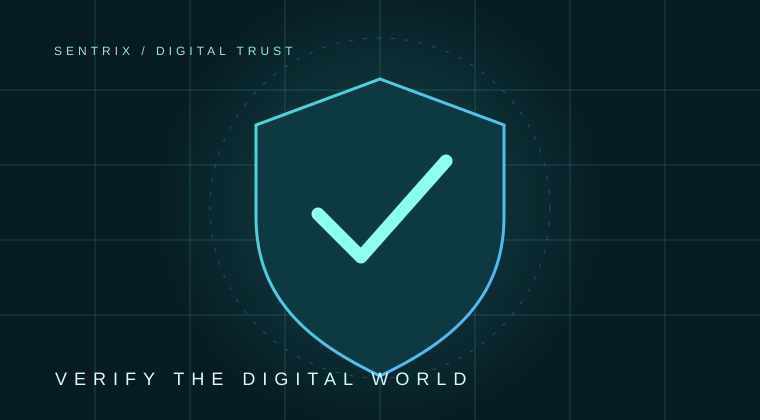

01
Yapay zekâ ve akıllı sistemler
Dil modelleri, akıllı asistanlar, model yönlendirme sistemleri ve insan odaklı dijital deneyimler üzerine ürün ve araştırma çalışmaları.
INTELLIGENCE
& COMPUTATION
& COMPUTATION
EMSYLLIS; bilimin merakından, mühendisliğin disiplininden ve teknolojinin dönüştürücü gücünden beslenen bağımsız bir araştırma ve inovasyon kuruluşudur.
Farklı uzmanlık alanlarını ortak bir vizyon altında buluşturuyor; fikirleri incelenebilir, geliştirilebilir ve gerçek ihtiyaçlara dokunan projelere dönüştürmek için çalışıyoruz.

Bizim için inovasyon, yalnızca yeni bir şey ortaya koymak değildir. Bir problemi doğru anlamak, güvenilir bilgiyle ilerlemek ve geliştirilen çözümün etkisini ciddiyetle değerlendirmektir.
EMSYLLIS çatısı altındaki projeler; yapay zekâdan dijital güvene, yazılım mühendisliğinden yeni nesil hesaplama fikirlerine uzanan farklı çalışma alanlarını temsil eder. Her biri kendi kapsamı ve gelişim süreci içinde ilerler.
EMSYLLIS'in hikâyesi ↗Birbirini tamamlayan disiplinler. Ortak bir araştırma kültürü. Farklı problemlere odaklanan projeler.
Dil modelleri, akıllı asistanlar, model yönlendirme sistemleri ve insan odaklı dijital deneyimler üzerine ürün ve araştırma çalışmaları.
Web tabanlı platformlar, servis mimarileri, geliştirici araçları ve sürdürülebilir dijital altyapılar. Tasarımdan uygulamaya uzanan sistematik geliştirme yaklaşımı.
Dijital kimlik, alan adı doğrulama, güvenilir etkileşim ve güvenlik farkındalığı gibi konularda daha anlaşılır ve denetlenebilir deneyimler geliştirme.
Kuantum teknolojileri ve geleceğin hesaplama yaklaşımlarını anlamaya yönelik kavramsal keşif, öğrenme ve araştırma odaklı çalışmalar.
Her girişim farklı bir ihtiyaca odaklanır. Projelerimizin kapsamını, yaklaşımını ve kendi resmî kanallarını inceleyin.
 01 / ARTIFICIAL INTELLIGENCE↗
01 / ARTIFICIAL INTELLIGENCE↗Yapay zekâ destekli dijital ürünler ve akıllı araçlar üzerine geliştirilen teknoloji ekosistemi.

02 / DIGITAL TRUST↗Alan adı doğrulama ve dijital güven odağında geliştirilen güvenlik projesi.
 03 / FRONTIER TECHNOLOGY↗
03 / FRONTIER TECHNOLOGY↗Kuantum teknolojileri ve yeni nesil hesaplama fikirlerine odaklanan keşif alanı.
 04 / MODEL RESEARCH↗
04 / MODEL RESEARCH↗Türkçe odaklı dil modeli ve güvenli, sürdürülebilir eğitim altyapısı araştırması.
EMSYLLIS tarafından desteklenen veya hediye edilen projeleri bu alanda şeffaf biçimde tanıtıyoruz.
01 / COMMUNITY INITIATIVE↗Kuantum teknolojileri ve yeni nesil hesaplama fikirlerine odaklanan bağımsız proje. EMSYLLIS tarafından desteklenen ve hediye edilen proje olarak bu bölümde yer alır.
Projeyi ziyaret et ↗
Bir fikrin değerini yalnızca iddiası değil; nasıl araştırıldığı, nasıl geliştirildiği ve sınırlarının ne kadar açık anlatıldığı belirler.
Problemi anlaİhtiyacı, kapsamı ve gerçek kullanım bağlamını tanımla.
Araştır ve doğrulaKaynakları, teknik seçenekleri ve kısıtları değerlendir.
Tasarla ve geliştirUygulanabilir mimari ve kullanıcı deneyimi oluştur.
Test et ve iyileştirSonuçları gözden geçir; güvenlik ve kaliteyi sürekli gözet.
Teknoloji üretirken benimsediğimiz ilkeler, projelerimizin yönünü ve gelişim biçimini belirler.
Sorular sormayı, öğrenmeyi ve kanıta dayalı düşünmeyi gelişimin başlangıcı kabul ederiz.
Bir projenin mevcut kapsamını, sınırlarını ve gelişim aşamasını açık biçimde ifade etmeye önem veririz.
Güvenilir sistemler tasarlamayı ve teknolojinin etkilerini sorumlulukla değerlendirmeyi hedefleriz.
Her sürümü öğrenme fırsatı olarak görür; test, geri bildirim ve iyileştirmeyle ilerleriz.
Bilinenin ötesine geçmek, önce bugünü doğru anlamakla başlar.
Bizi daha yakından tanıyın ↗Proje, araştırma, öneri ve iş birliği konularında bizimle iletişime geçin.